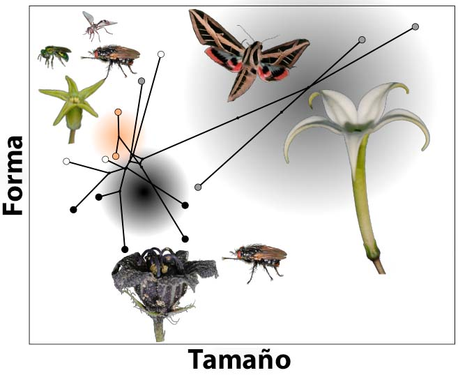
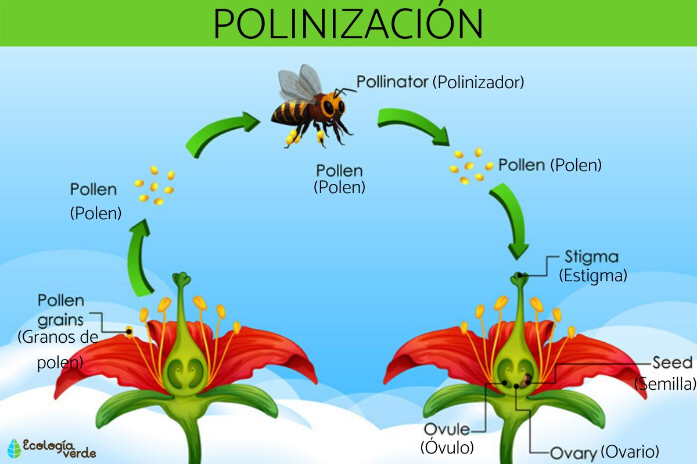

EVOLUCION DE LAS COLORES EN LAS FLORES
La evolución de los colores en las flores ha sido impulsada principalmente por la necesidad de atraer polinizadores específicos (abejas, aves, mariposas) y la adaptación al estrés ambiental, como alta radiación UV o cambios de temperatura. Mediante la producción de pigmentos (flavonoides, carotenoides, betalaínas), las plantas generan señales visuales que cambian para optimizar la reproducción.
-
Evolución para la Polinización: Los colores llamativos evolucionaron como señales visuales para guiar a los polinizadores, asegurando la reproducción, donde las abejas prefieren azules/violetas y otros insectos colores blancos o UV.
-
Adaptación al Entorno (Cambio Climático): Las flores modifican su color como respuesta de su código genético ante el estrés hídrico o la radiación UV, produciendo metabolitos que les otorgan tonos morados o más oscuros para protegerse.
- Visión de los insectos: Los insectos ya tenían la capacidad de ver colores millones de años antes de que existieran las flores. Cuando las flores desarrollaron colores brillantes, se volvieron señales visuales imposibles de ignorar en un mundo que antes era mayoritariamente verde.
- Especialización: Con el tiempo, las flores evolucionaron tonos específicos para "hablar" con polinizadores concretos:
- Abejas: Prefieren el azul, violeta y amarillo (y ven patrones ultravioletas invisibles para nosotros).Aves: Se sienten atraídas por rojos y naranjas vibrantes.

